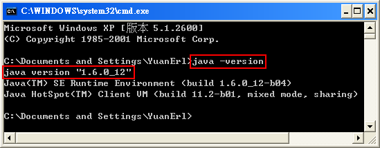

|
以下是使用PLWeb的編輯器所需要的初始設定說明。完成安裝後，必須關掉全部的瀏覽器，然後重新開啟瀏覽器登入PLWeb，才能下載、執行PLWeb編輯器中的練習。 |
|
安裝JDK |
||
|---|---|---|
| 1. | 先下載並安裝SUN JDK 1.5或1.6。 | |
| 2. | 設定PATH | |
我的電腦 > 右鍵 > 內容 > 進階 > 環境變數 > 系統變數 找到PATH按編輯，在原設定最前方加入以下路徑(須先確認路徑是否存在，分號是路徑之間的分隔符號，一定要加)。 C:\Program Files\Java\jdk1.6.0_12\bin; PS：1.6.0_12視安裝版本而定。
|
||
| 3. | 設定CLASSPATH | |
我的電腦 > 右鍵 > 內容 > 進階 > 環境變數 > 系統變數 找到或新增CLASSPATH按編輯，在原設定最前方加入以下路徑(須先確認路徑是否存在，分號是路徑之間的分隔符號，一定要加)。 .;C:\Program Files\Java\jdk1.6.0_12\lib; PS：1.6.0_12視安裝版本而定。
|
||
| 4. | 驗證設定 | |
| 打開DOS視窗, 輸入javac -version看是否有正確提示版本。
 |
完成以上的步驟後(必須關掉並重新開啟瀏覽器)，即可下載PLWeb的編輯器學習Java(若不能下載編輯器，請關掉瀏覽器的proxy)。 |
|
如果要學習其他語言（如C/C＋＋），請參考以下安裝編輯器的範例 |
||
|---|---|---|
1. |
先安裝Dev C++（VISTA users需安裝 MinGW-5.1.3，請見第4點） | |
|
Dev-C++ 5.0 beta 9.2 (4.9.9.2) (9.0 MB) with Mingw/GCC 3.4.2 |
||
2. |
設定PATH | |
我的電腦 > 右鍵 > 內容 > 進階 > 環境變數 > 系統變數 找到PATH按編輯, 在原設定最前方加入以下路徑(須先確認路徑是否存在, 分號是路徑之間的分隔符號, 一定要加) C:\DEV-C++\Bin;
|
||
| 3. | 驗證設定 | |
打開DOS視窗, 輸入gcc --version看是否有正確提示版本
|
||
| 4. | for VISTA users: | |
請下載 MinGW-5.1.3, 安裝至 C:\MinGW, 將PATH設定加上 C:\MinGW\bin;C:\MinGW\libexec\gcc\mingw32\3.4.5; (請加在最前面) |
||